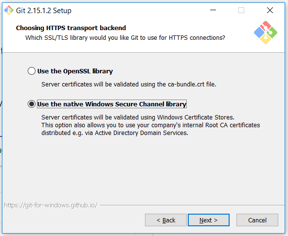

cUrl CLI on Windows
Posted on December 11, 2017 in Develop Updated: January 05, 2018
cUrl on Windows is not trouble-free to get working, when posting to SSL domains.
Here is howto:
- Download latest windows version of cUrl. I used curl-7.57.0, which is SSL and SSH enabled.
- Extract the files from the zip file to
C:\Program Files\curl-7.57.0\ - Add to enviroment PATH (running as admin):
C:\Program Files\curl-7.57.0\src
So now you can call the CLI from a prompt
curl --version
# Response:
# curl 7.57.0 (x86_64-w64-mingw32) libcurl/7.57.0 OpenSSL/1.0.2h (WinSSL) zlib/1.2.8 WinIDN libssh2/1.7.0_DEV
# Release-Date: 2017-11-30
# Protocols: dict file ftp ftps gopher http https imap imaps ldap ldaps pop3 pop3s rtsp scp sftp smtp smtps telnet tftp
#Features: AsynchDNS IDN IPv6 Largefile SSPI Kerberos SPNEGO NTLM SSL libz TLS-SRP HTTPS-proxy MultiSSL
# Call an API:
curl -X GET "http://petstore.swagger.io/v2/pet/1" -H "accept: application/json"
# Response:
# {"id":1,"category":{"id":1,"name":"string"},"name":"1","photoUrls":["string"],"tags":[{"id":1,"name":"string"}],"status":"1"}
But if you try an SSL endpoint you get an error
curl -X GET "https://hacker-news.firebaseio.com/v0/item/8863.json?print=pretty"
# Response:
# curl: (60) SSL certificate problem: unable to get local issuer certificate
# More details here: https://curl.haxx.se/docs/sslcerts.html
The reason seems to be that cUrl can't access Windows's certificate store.
HowTo fix curl: (60) SSL certificate problem:
- Let curl read allowed SSL providers from file cacert.pem. Put the file in the
\src\folder. - Create new enviroment variable (running as admin)
set CURL_CA_BUNDLE=C:\Program Files\curl-7.57.0\src\cacert.pem - Refresh environment:
refreshenv
curl -X GET "https://hacker-news.firebaseio.com/v0/item/8863.json?print=pretty"
# Response:
# {
# "by" : "dhouston",
# "descendants" : 71,
# "id" : 8863,...
# }
SSL with GIT
Just like cUrl Git-for-windows also checks the SSL path.
By default ca-bundle.crt file from OpenSSL

If you during installation change to use Windows Certificate Store, then Windows will keep the ca-list updated for you, I assume.
The End